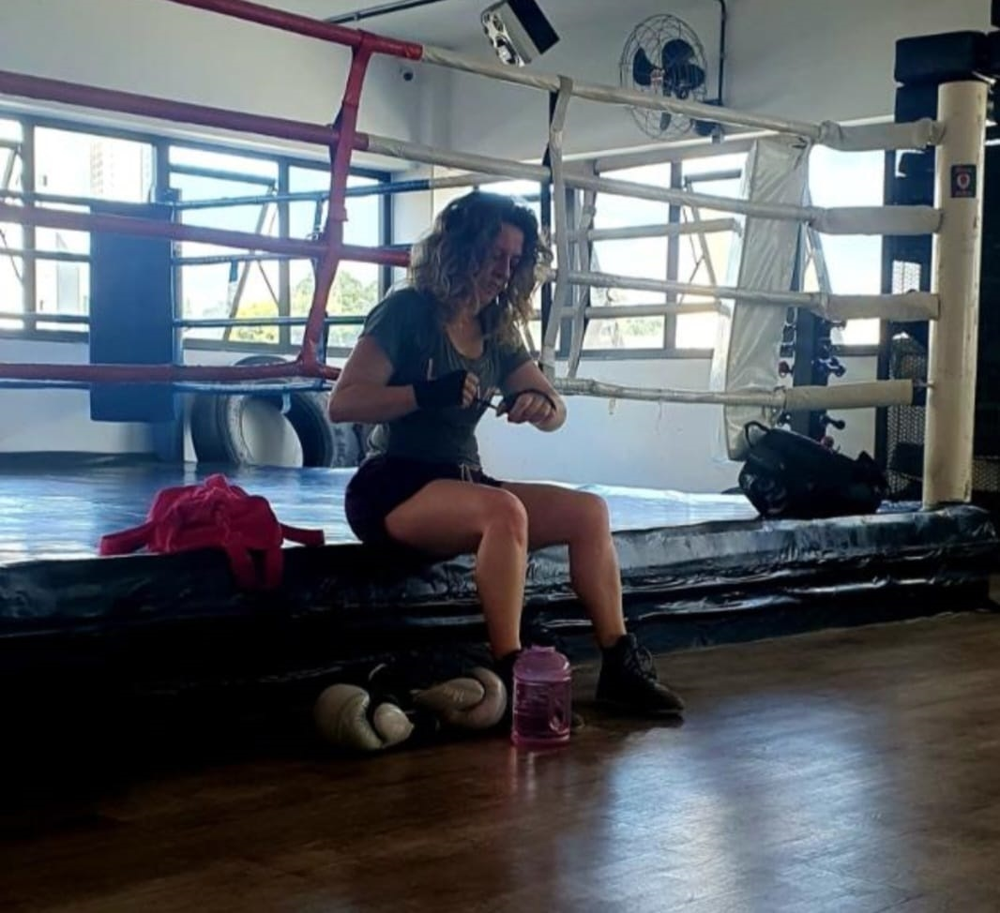

.container {
            display: flex;
            align-items: center;
        }

        .texto {
            text-align: justify;
            text-indent:50px;
            flex: 1;
            padding: 20px;
        }

        .imagem {
            flex: 1;
            text-align: right;
        }

        img {
            max-width: 100%;
            height: auto;
        }
    </style>
</head>
<body>
    <div class="container">
        <div class="texto">
            <h1>QUEM SOU</h1>
            <p>"Apanhar da Vida: Colocando Luvas de Boxe para Mostrar Quem Manda"

A vida muitas vezes nos coloca em situações difíceis, desafios que parecem golpes poderosos desferidos por um adversário implacável. É nesses momentos que precisamos aprender a lutar, a erguer-nos contra as adversidades, a mostrar quem é o verdadeiro mestre do ringue da nossa existência.

Às vezes, parece que a vida está nos desafiando, testando nossa força e resiliência. Mas em vez de recuar, colocamos nossas luvas de boxe e enfrentamos cada desafio de frente. Não importa o quão difícil seja, não importa quantos golpes recebamos, nós resistimos, mostrando que somos mais fortes do que jamais imaginamos.

O boxe é um esporte que ensina muitas lições valiosas. Ele nos ensina a disciplina, a perseverança e a importância de estar preparado para o inesperado. Assim como na vida, no ringue, é crucial ter a paixão e a determinação para continuar, mesmo quando as coisas estão difíceis.

Mas a vida não se trata apenas de boxe; há também a arte do Muay Thai, que nos ensina a usar todas as ferramentas à nossa disposição. Assim como no Muay Thai, na vida, precisamos ser versáteis, adaptar-nos às mudanças e usar nossa paixão e coragem para superar qualquer obstáculo.

A paixão pelo boxe e pelo Muay Thai não se limita ao ringue. Ela se estende para além das cordas e molda nossa mentalidade diária. É um lembrete constante de que somos capazes de muito mais do que pensamos. É a chama que nos mantém motivados, nos faz continuar lutando quando a vida tenta nos derrubar.

Então, da próxima vez que a vida lançar um golpe, lembre-se de colocar suas luvas de boxe. Lembre-se de que você é o mestre do seu destino, o capitão do seu próprio navio. Lute com paixão, determinação e coragem, e você descobrirá que pode superar qualquer desafio que a vida coloque no seu caminho. Mostre a todos quem manda no ringue da vida - e lembre-se de que a paixão é o seu melhor aliado para a vitória.


</p>
        </div>
        <div class="imagem">
            
        </div>
    </div>
</body>
</html>